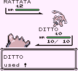

AttackDex/RB:000
(↑ Back to the AttackDex index.)
| Name (transcribed): - (random internal name)  Identifier (HEX): 00 Identifier (DEC): 000 Applicable for Super Glitch?: Allows for CoolTrainer♀ corruption (similar to Super Glitch). Otherwise no. Effect byte: 0x74 Effect pointer: F928 Type : CoolTrainer♀ (hex:7A) Animation/Mirror Move: Fissure (0x5A) Power: 102 Accuracy: 80/256 PP (no PP Ups): 13
|
- (random internal name) is the English Pokémon Red and Blue version of - (Generation I move) and a CoolTrainer♀ (hex:7A) type glitch move.
Its random internal name can be used in battle for Move 0x00 corruption (if the state of the RAM allows it), such as the TMTRAINER effect turning the foe into MissingNo. (hex:32) if the player opens the item menu without the inverse sprites glitch active, or Horsea if the player opens the item menu with the inverse sprites glitch active. Other corruptions can occur from modifying the saved screen data outside of battle by opening the items, or Pokémon or a similar menu just before entering battle, and not opening the items or Pokémon menu again.
If this glitch move successfully hits, it will have the animation of Fissure and may cause arbitrary code execution at Echo RAM region F928 (equivalent to D928 in WRAM) if it does not knock out the opponent. This region is part of the opposing Trainer's Pokémon team data (specifically at Pokémon 4).
This glitch move's effect was used in a tool assisted speedrun of Pokémon Blue by MrWint to beat the game relatively quickly.
| |
Improper '-' use can cause the CFC4 freeze.
Contents
Obtaining '-' as the first move
In Pokémon Red and Blue, the swapping Transform moves glitch can be used to put '-' in the first position of the moves list if the number of moves after the transformation is greater than the number of moves before the transformation.
Example 1: Ditto normally only knows Transform, so if it transforms into a Pokémon with four moves, swapping the second move with the first will make it have CoolTrainer♀ as the first move after the battle.
Example 2: A Mew knowing only three moves including Transform can encounter a Pokémon with four moves and transform into it. Then, swapping the fourth move with the first move will give CoolTrainer♀ as the first move after the battle.
The swapping Transform moves glitch was fixed in Pokémon Yellow, however, the player can still trade a Pokémon with an accessible '-' over from Pokémon Red and Blue.
Certain glitch Pokémon know the CoolTrainer♀ move as their first starting move, and many can learn the CoolTrainer♀ move through level up, meaning that the first move can be replaced with it if the Pokémon already has four moves.
Arbitrary code execution can be used to obtain '-' as the first move, too. Here is a 8F setup for Pokémon Red and Blue, starting from the first item in the pack:
- 8F (R/B) / ws m (Y)
- Any item x[any qty]
- Lemonade x1
- Iron x37 (R/B) / x36 (Y)
- X Accuracy x115
- Soda Pop x3
- Water Stone x3
- TM01 x[any qty]
Code :
- ld a, 1
- dec h
- dec h
- ld l, $73 (R/B) / $72 (Y)
- dec a
- inc bc
- ldi (hl), a
- inc bc
- ret
0 initial PP and how to restore it
After obtaining '-' as the first move it may have 0/13 PP at first, and healing at a Pokémon Center won't restore its PP. However, if the player uses a certain PP restoring item (Ether or Max Ether only), it's possible to use the move.
Glitch Pokémon that know '-' as their first move
#250 family:
#000 family:
- Fossil and Ghost Missingno. only, if one of the Pokémon above is the last Pokémon in the party, and the Pokémon screen is opened before capturing it. (hex:B6-B8)
Glitch Pokémon that know '-' through level up
(Ditto and Mew can acquire this move as move 1 with the swapping Transform moves glitch)
Note that this data was generated from the ROM, and has not been verified.
| Glitch Pokémon | Index number (dec) | Level(s) it learns '-' |
|---|---|---|
| ▶ A (hex:BF) | 191 | 248 |
| ゥ (hex:C1) | 193 | 33 |
| . 4 (hex:C2) | 194 | 97, 123 |
| POKéWTRAINER (hex:C4) | 196 | 139 |
| ♀pゥ ゥ ゥ (hex:C7) | 199 | 115, 219 |
| PC 4S H (hex:CA) | 202 | 28, 62 |
| TRAINER (hex:CD) | 205 | 181 |
| W G d (hex:CE) | 206 | 248 |
| O PkMn4 X (hex:CF) | 207 | 33 |
| PkMn PkMn T (hex:D0) | 208 | 22 |
| 4B 8 4 8 (hex:D1) | 209 | 165 |
| M p' u ゥ (hex:D3) | 211 | 234 |
| pゥ ゥ ゥ (hex:D5) | 213 | 12, 13, 115, 131, 137 |
| 4 h (hex:D6) | 214 | 4 |
| PkMnRPkMn B (hex:D9) | 217 | 6, 11 |
| B (hex:DA) | 218 | 3 |
| (hex:DC) | 220 | 3 |
| 7 PkMn 'v (hex:DD) | 221 | 12, 13, 115, 131, 137 |
| 'v (hex:E1) | 225 | 234 |
| ...... (hex:E2) | 226 | 248 |
| (hex:E4) | 228 | 4, 33 |
| C (hex:E5) | 229 | 248 |
| (hex:E6) | 230 | 4 |
| pゥ (hex:E7) | 231 | 234 |
| c (hex:E9) | 233 | 3 |
| (hex:EB) | 235 | 38 |
| h ゥ (hex:ED) | 237 | 248 |
| g (hex:EE) | 238 | 33 |
| 94 (hex:F1) | 241 | 12, 22 |
| ゥ (hex:F2) | 242 | 192, 248 |
| ゥ (hex:F3) | 243 | 28, 62 |
| G 'Mp (hex:F6) | 246 | 240 |
| ' N g ゥ (hex:F8) | 248 | 12, 13, 115, 131, 137 |
| 94 h (hex:F9) | 249 | 38 |
| (hex:FA) | 250 | 6, 22 |
| O (hex:FC) | 252 | 234 |
| 6ゥ (hex:FD) | 253 | 248 |
| 'M (hex:FE) | 254 | 3, 7, 15, 31, 63, 127, 255 |
| 'M (hex:FF) | 255 | 28, 62 |